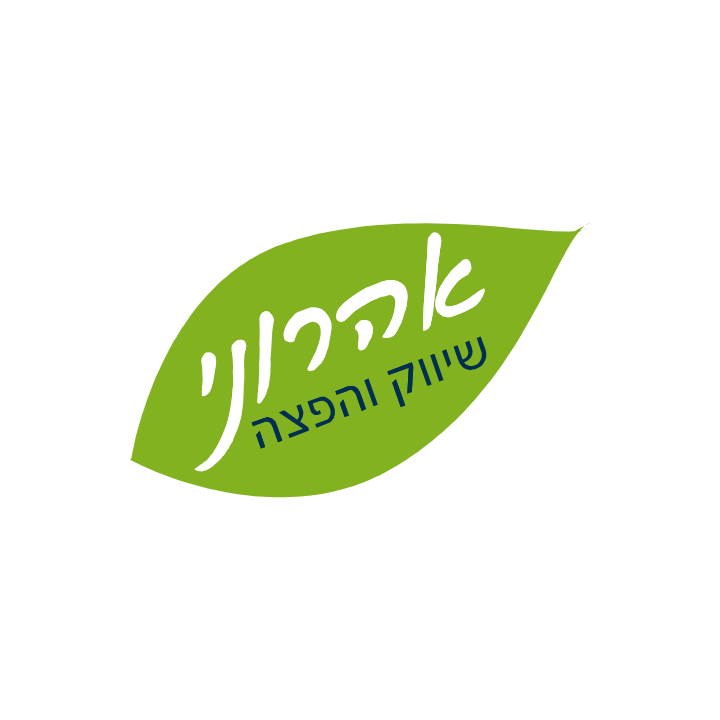
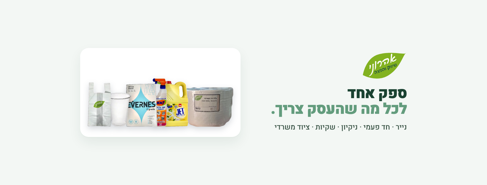
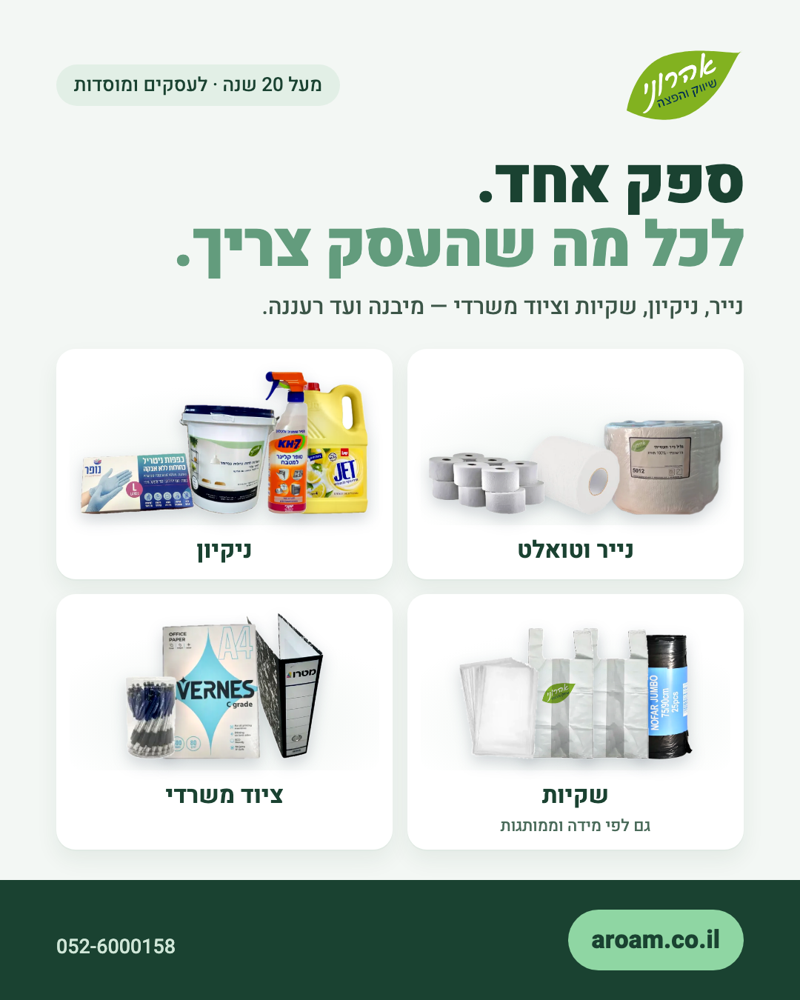
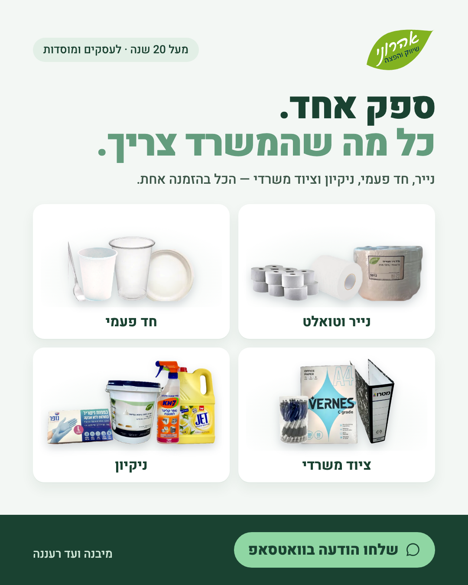
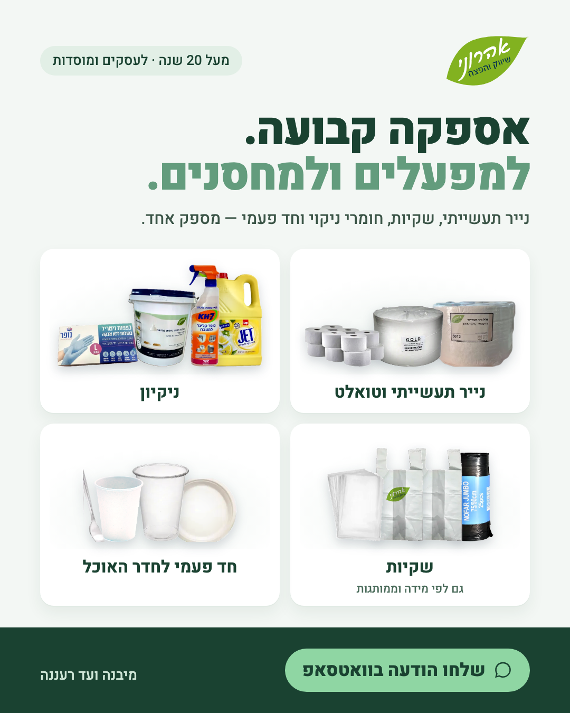
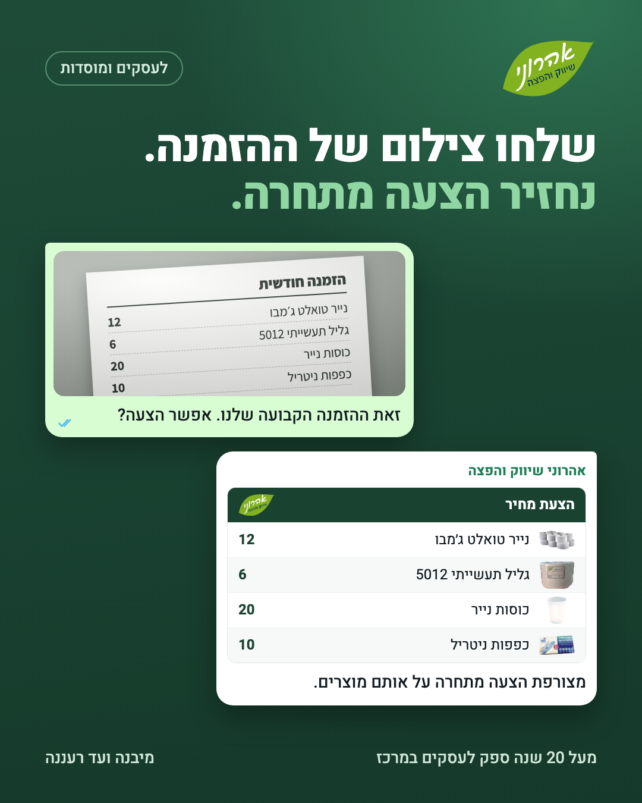
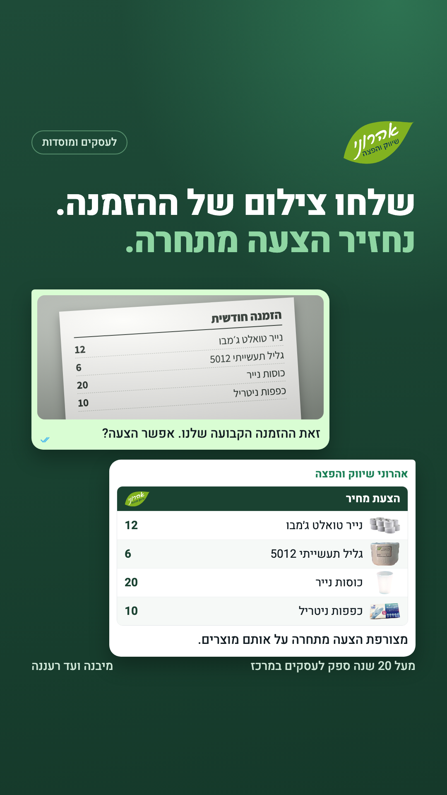
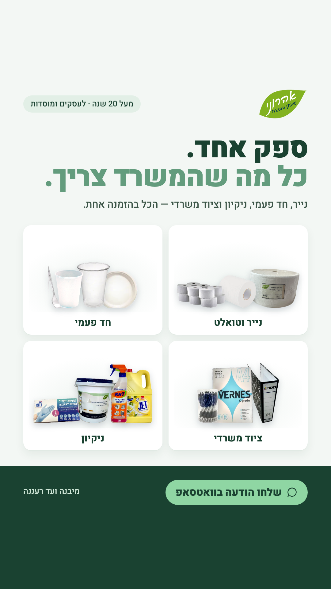
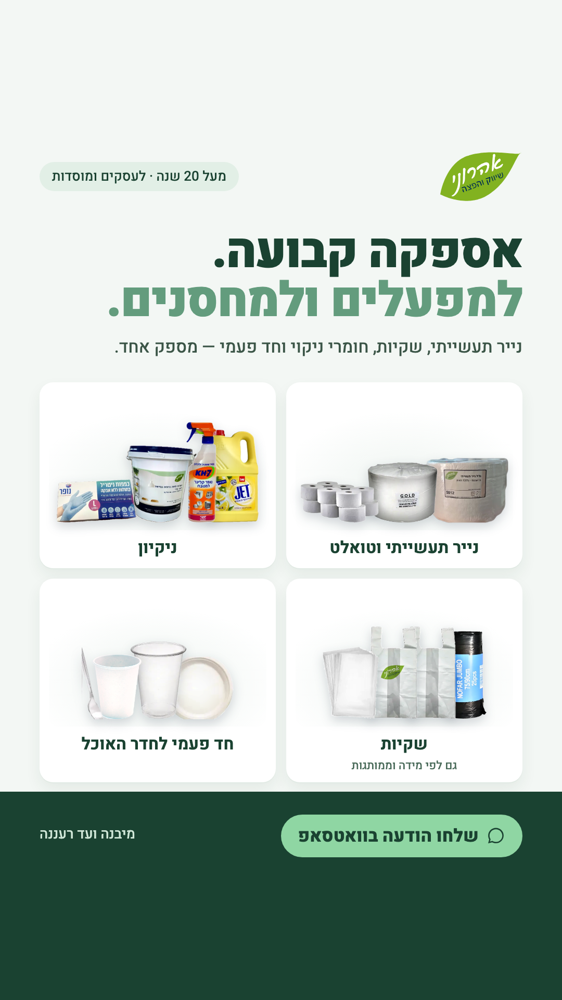

<meta charset="utf-8">
<meta name="viewport" content="width=device-width, initial-scale=1, viewport-fit=cover">
<title>מדריך קמפיין הוואטסאפ</title>
<meta name="claude:viewport-fit-sides" content="cover">
<meta name="robots" content="noindex, nofollow">
<link rel="preconnect" href="https://fonts.googleapis.com">
<link rel="preconnect" href="https://fonts.gstatic.com" crossorigin>
<link rel="stylesheet" href="https://fonts.googleapis.com/css2?family=Heebo:wght@700;800&family=Assistant:wght@400;600;700&display=swap">
<style>
/* A setup checklist read top to bottom, often on a phone: one column of numbered steps,
   each text Roei pastes in its own copy box. Brand greens from the site. */
:root {
  --bg: #F3F7F4;
  --card: #FFFFFF;
  --text: #1F2A24;
  --muted: #51625A;
  --line: #D8E5DC;
  --head: #1A4231;
  --chip: #E2EFE6;
  --code: #F0F5F2;
  --btn: #1A4231;
  --btn-text: #FFFFFF;
  --warn: #8A4E10;
  --warn-bg: #FBF1E4;
  --display: "Heebo", "Arial Hebrew", sans-serif;
  --body: "Assistant", "Arial Hebrew", -apple-system, sans-serif;
}
@media (prefers-color-scheme: dark) {
  :root:not([data-theme="light"]) {
    --bg: #0E1914; --card: #16241D; --text: #E5EEE8; --muted: #A2B5A9; --line: #29402F;
    --head: #8FD6A3; --chip: #1F3A2C; --code: #1C2E24;
    --btn: #8FD6A3; --btn-text: #0E1914; --warn: #E8B072; --warn-bg: #2C2316;
    color-scheme: dark;
  }
}
:root[data-theme="dark"] {
  --bg: #0E1914; --card: #16241D; --text: #E5EEE8; --muted: #A2B5A9; --line: #29402F;
  --head: #8FD6A3; --chip: #1F3A2C; --code: #1C2E24;
  --btn: #8FD6A3; --btn-text: #0E1914; --warn: #E8B072; --warn-bg: #2C2316;
  color-scheme: dark;
}
* { box-sizing: border-box; }
body { background: var(--bg); color: var(--text); font-family: var(--body); font-size: 17px;
  line-height: 1.6; direction: rtl; }
.wrap { max-width: 860px; margin: 0 auto; display: grid; gap: 18px;
  padding-left: max(16px, env(safe-area-inset-left, 0px));
  padding-right: max(16px, env(safe-area-inset-right, 0px));
  padding-block: 28px 64px; }
h1, h2 { font-family: var(--display); color: var(--head); text-wrap: balance; margin: 0; }
h1 { font-size: 30px; line-height: 1.2; font-weight: 800; }
h2 { font-size: 22px; line-height: 1.3; font-weight: 700; }
h3 { font-size: 18px; margin: 10px 0 0; }
p { margin: 0; }
.lead { color: var(--muted); max-width: 62ch; }
.step { background: var(--card); border: 1px solid var(--line); border-radius: 10px; padding: 20px;
  display: grid; gap: 12px; min-width: 0; }
.num { justify-self: start; background: var(--chip); color: var(--head); font-weight: 700;
  font-size: 14px; letter-spacing: .02em; border-radius: 20px; padding: 2px 12px; }
ol, ul { margin: 0; padding-inline-start: 22px; display: grid; gap: 6px; }
code { background: var(--code); border-radius: 4px; padding: 1px 6px; font-size: 15px;
  direction: ltr; unicode-bidi: isolate; }
.copy { border: 1px solid var(--line); border-radius: 8px; background: var(--code); min-width: 0; }
.copy-head { display: flex; justify-content: space-between; align-items: center; gap: 8px;
  padding: 8px 12px; border-bottom: 1px solid var(--line); }
.copy-label { font-weight: 700; font-size: 14px; color: var(--muted); }
.copy-btn { font: inherit; font-size: 14px; font-weight: 700; color: var(--btn-text); background: var(--btn);
  border: 0; border-radius: 6px; padding: 6px 14px; min-height: 36px; cursor: pointer; }
.copy-btn:focus-visible { outline: 3px solid var(--head); outline-offset: 2px; }
.copy-text { margin: 0; padding: 12px; white-space: pre-wrap; overflow-wrap: anywhere;
  font-family: var(--body); font-size: 16px; }
.table-wrap { overflow-x: auto; }
table { width: 100%; border-collapse: collapse; font-size: 15px; }
th, td { text-align: start; padding: 8px; border-bottom: 1px solid var(--line); vertical-align: top; }
th { color: var(--muted); font-weight: 700; }
td:first-child { white-space: nowrap; font-variant-numeric: tabular-nums; }
.imgs { display: grid; grid-template-columns: repeat(2, minmax(0, 1fr)); gap: 10px; }
.imgs.four { grid-template-columns: repeat(4, minmax(0, 1fr)); }
.imgs figure { margin: 0; display: grid; gap: 4px; align-self: start; }
.imgs img { width: 100%; max-width: 100%; height: auto; display: block; border-radius: 6px;
  border: 1px solid var(--line); }
.imgs figcaption { font-size: 14px; color: var(--muted); }
.note { background: var(--chip); border-radius: 8px; padding: 10px 14px; }
.warn { background: var(--warn-bg); color: var(--text); border-radius: 8px; padding: 10px 14px; }
.warn b { color: var(--warn); }
.check { list-style: none; padding-inline-start: 0; }
.check li { display: grid; grid-template-columns: 18px 1fr; gap: 10px; align-items: start; }
.check li::before { content: ""; width: 14px; height: 14px; margin-top: 6px; border: 2px solid var(--head);
  border-radius: 3px; }
@media (max-width: 560px) {
  .imgs.four { grid-template-columns: repeat(2, minmax(0, 1fr)); }
  h1 { font-size: 25px; }
  .step { padding: 16px; }
}
@media (prefers-reduced-motion: no-preference) {
  .copy-btn { transition: background-color .15s; }
}
</style>

<main class="wrap" dir="rtl" lang="he">

<header class="step" style="background:transparent;border:0;padding:0">
  <h1>מדריך הקמה: קמפיין וואטסאפ בפייסבוק</h1>
  <p class="lead">כל השלבים לפי הסדר. ליד כל טקסט שמדביקים יש כפתור העתקה. קובצי התמונות נמצאים במחשב בתיקייה <code>marketing/meta/img</code>.</p>
  <div class="table-wrap"><table>
    <tr><th>ימים</th><th>מה עושים</th></tr>
    <tr><td><span dir="ltr">1–3</span></td><td>שלב 1 (וואטסאפ ביזנס) ושלב 2 (דף עסקי)</td></tr>
    <tr><td><span dir="ltr">3–5</span></td><td>שלב 3 (חיבור הוואטסאפ), פרסום 4 הפוסטים, שלב 4 (חשבון מודעות ואימות העסק)</td></tr>
    <tr><td><span dir="ltr">5–7</span></td><td>שלב 5 (הקמת הקמפיין) ושלב 6 (בדיקה), ואז הפעלה</td></tr>
    <tr><td><span dir="ltr">7–35</span></td><td>שלב 7: 28 ימי ריצה וספירה שבועית</td></tr>
  </table></div>
</header>

<section class="step" id="whatsapp">
  <span class="num">שלב 1 · בטלפון</span>
  <h2>WhatsApp Business</h2>
  <ol>
    <li>להוריד את WhatsApp Business מחנות האפליקציות.</li>
    <li>להיכנס עם אותו מספר, 052-6000158. כשהאפליקציה מציעה להעביר את השיחות מהוואטסאפ הרגיל, לאשר.</li>
    <li>פרופיל עסקי (הגדרות ← כלים לעסקים ← פרופיל עסקי): שם <b>אהרוני שיווק והפצה</b> · קטגוריה: הקרובה ביותר לסיטונאות או אספקה לעסקים · כתובת היצירה 16, אור יהודה · שעות א׳–ה׳ <span dir="ltr">08:00–17:00</span> · מייל meiraroam@gmail.com · אתר https://aroam.co.il · תמונת פרופיל <code>profile.png</code> (מוצגת בשלב 2).</li>
  </ol>
  <div class="copy"><div class="copy-head"><span class="copy-label">תיאור העסק</span><button type="button" class="copy-btn" id="copy-wa-desc">העתקה</button></div>
<pre class="copy-text">ספק סיטונאי לעסקים ומוסדות במרכז: חד פעמי ואריזות, מוצרי נייר, חומרי ניקוי, שקיות וציוד משרדי. מעל 20 שנה. אספקה מיבנה ועד רעננה.</pre></div>

  <h3>הודעת פתיחה</h3>
  <p>כלים לעסקים ← הודעת פתיחה ← להפעיל, נמענים: כולם.</p>
  <div class="copy"><div class="copy-head"><span class="copy-label">הודעת פתיחה</span><button type="button" class="copy-btn" id="copy-wa-greeting">העתקה</button></div>
<pre class="copy-text">שלום, תודה שפניתם לאהרוני שיווק והפצה.
כדי שנכין הצעה מדויקת, כתבו לנו:
1. שם העסק והעיר
2. מה אתם מזמינים בדרך כלל — או פשוט צילום של ההזמנה האחרונה</pre></div>

  <h3>הודעת היעדרות</h3>
  <p>כלים לעסקים ← הודעת היעדרות ← להפעיל, תזמון: מחוץ לשעות הפעילות.</p>
  <div class="copy"><div class="copy-head"><span class="copy-label">הודעת היעדרות</span><button type="button" class="copy-btn" id="copy-wa-away">העתקה</button></div>
<pre class="copy-text">שלום, קיבלנו את ההודעה ונחזור אליכם בשעות הפעילות.</pre></div>

  <h3>תשובות מהירות</h3>
  <p>כלים לעסקים ← תשובות מהירות ← הוספה. הקיצור הוא מה שמקלידים בשיחה כדי לשלוף את התשובה.</p>
  <div class="copy"><div class="copy-head"><span class="copy-label">קיצור /פרטים</span><button type="button" class="copy-btn" id="copy-qr-details">העתקה</button></div>
<pre class="copy-text">כדי שנכין הצעה מדויקת: שם העסק, העיר, ומה אתם מזמינים בדרך כלל — אפשר פשוט צילום של ההזמנה האחרונה.</pre></div>
  <div class="copy"><div class="copy-head"><span class="copy-label">קיצור /אזור</span><button type="button" class="copy-btn" id="copy-qr-area">העתקה</button></div>
<pre class="copy-text">אנחנו מספקים לעסקים מיבנה ועד רעננה, כולל גוש דן ובקעת אונו.</pre></div>
  <div class="copy"><div class="copy-head"><span class="copy-label">קיצור /קטלוג</span><button type="button" class="copy-btn" id="copy-qr-catalog">העתקה</button></div>
<pre class="copy-text">הקטלוג המלא שלנו: https://aroam.co.il/catalog/?utm_source=whatsapp&amp;utm_medium=chat&amp;utm_campaign=meta — אפשר לסמן מוצרים ולשלוח לנו את ההזמנה ישר לוואטסאפ.</pre></div>
  <div class="copy"><div class="copy-head"><span class="copy-label">קיצור /הצעה</span><button type="button" class="copy-btn" id="copy-qr-quote">העתקה</button></div>
<pre class="copy-text">מצורפת הצעת המחיר. אם יש שאלה על מוצר או כמות — כתבו לנו כאן.</pre></div>

  <h3>תוויות</h3>
  <p>ליצור ארבע תוויות: <b>פייסבוק</b> · <b>לא עסקי</b> · <b>נשלחה הצעה</b> · <b>לקוח חדש</b>. כל שיחה שמגיעה מהמודעות מקבלת "פייסבוק", ובהמשך את התווית של השלב שהגיעה אליו.</p>
</section>

<section class="step" id="page">
  <span class="num">שלב 2 · מחשב או טלפון</span>
  <h2>דף עסקי בפייסבוק</h2>
  <ol>
    <li>מהפרופיל האישי: תפריט ← דפים ← יצירת דף חדש.</li>
    <li>שם הדף: <b>אהרוני שיווק והפצה</b>. קטגוריה: להקליד "סיטונאי" או "Wholesale" ולבחור את הקרובה ביותר.</li>
    <li>פרטי קשר: אתר https://aroam.co.il · טלפון 052-6000158 · מייל meiraroam@gmail.com · כתובת היצירה 16, אור יהודה · שעות א׳–ה׳ <span dir="ltr">08:00–17:00</span>.</li>
    <li>תמונת פרופיל <code>profile.png</code> ותמונת כיסוי <code>cover.png</code>:</li>
  </ol>
  <div class="imgs">
    <figure><figcaption>תמונת פרופיל</figcaption></figure>
    <figure><figcaption>תמונת כיסוי</figcaption></figure>
  </div>
  <div class="copy"><div class="copy-head"><span class="copy-label">ביו (שורת התיאור הקצרה)</span><button type="button" class="copy-btn" id="copy-page-bio">העתקה</button></div>
<pre class="copy-text">ספק סיטונאי לעסקים ומוסדות במרכז: חד פעמי, נייר, ניקיון, שקיות וציוד משרדי. מעל 20 שנה.</pre></div>

  <h3>ארבעה פוסטים ראשונים</h3>
  <p>לפרסם את כולם <b>לפני</b> שהמודעות עולות, כדי שבעל עסק שנכנס לבדוק את הדף לא ימצא דף ריק.</p>
  <div class="imgs four">
    <figure><figcaption>פוסט 1 · <code>brand_feed.png</code></figcaption></figure>
    <figure><figcaption>פוסט 2 · <code>office_feed.png</code></figcaption></figure>
    <figure><figcaption>פוסט 3 · <code>factory_feed.png</code></figcaption></figure>
    <figure><figcaption>פוסט 4 · <code>switch_feed.png</code></figcaption></figure>
  </div>
  <div class="copy"><div class="copy-head"><span class="copy-label">פוסט 1 · מי אנחנו</span><button type="button" class="copy-btn" id="copy-post-1">העתקה</button></div>
<pre class="copy-text">אהרוני שיווק והפצה — מעל 20 שנה ספק לעסקים ומוסדות במרכז. חד פעמי ואריזות, מוצרי נייר, חומרי ניקוי, שקיות וציוד משרדי, מספק אחד. אספקה מיבנה ועד רעננה. הקטלוג המלא: aroam.co.il</pre></div>
  <div class="copy"><div class="copy-head"><span class="copy-label">פוסט 2 · למשרדים</span><button type="button" class="copy-btn" id="copy-post-2">העתקה</button></div>
<pre class="copy-text">למשרדים: נייר טואלט ומגבות, חד פעמי, חומרי ניקוי וציוד משרדי — הזמנה אחת מספק אחד. שלחו לנו הודעה בוואטסאפ ונחזור עם הצעת מחיר: 052-6000158</pre></div>
  <div class="copy"><div class="copy-head"><span class="copy-label">פוסט 3 · למפעלים ומחסנים</span><button type="button" class="copy-btn" id="copy-post-3">העתקה</button></div>
<pre class="copy-text">למפעלים ומחסנים: גלילי נייר תעשייתי, שקיות אשפה (גם לפי מידה וממותגות), כפפות ניטריל וחומרי ניקוי בגדלים מוסדיים — באספקה קבועה. שלחו הודעה עם מה שאתם צריכים: 052-6000158</pre></div>
  <div class="copy"><div class="copy-head"><span class="copy-label">פוסט 4 · כבר עובדים עם ספק?</span><button type="button" class="copy-btn" id="copy-post-4">העתקה</button></div>
<pre class="copy-text">כבר עובדים עם ספק אחר? שלחו לנו בוואטסאפ צילום של ההזמנה או החשבונית האחרונה, ונחזיר הצעה מתחרה על אותם מוצרים. 052-6000158</pre></div>
</section>

<section class="step" id="link">
  <span class="num">שלב 3</span>
  <h2>חיבור הוואטסאפ לדף</h2>
  <p>הגדרות הדף ← חשבונות מקושרים (Linked accounts) ← WhatsApp ← להקליד 052-6000158 ← שליחת קוד. הקוד מגיע לוואטסאפ ביזנס, ומזינים אותו.</p>
</section>

<section class="step" id="account">
  <span class="num">שלב 4 · במחשב</span>
  <h2>חשבון מודעות</h2>
  <ol>
    <li>להיכנס ל-business.facebook.com. ה-Business Manager "אהרוני שיווק והפצה" <b>כבר קיים</b>, אין לפתוח חדש.</li>
    <li>הגדרות העסק ← חשבונות ← דפים ← הוספה ← לבחור את הדף החדש.</li>
    <li>הגדרות העסק ← חשבונות ← חשבונות מודעות ← הוספה ← יצירת חשבון מודעות חדש. שם: "אהרוני — מודעות". <b>אזור זמן: ירושלים. מטבע: שקל חדש (ILS).</b></li>
    <li>אמצעי תשלום: כרטיס אשראי.</li>
    <li>אימות דו-שלבי בפרופיל האישי: הגדרות ← אבטחה וכניסה ← אימות דו-שלבי.</li>
    <li>אימות העסק: הגדרות העסק ← מרכז האבטחה ← התחלת אימות, עם תעודת עוסק מורשה 059291906.</li>
  </ol>
  <p class="warn"><b>אזור הזמן והמטבע לא ניתנים לשינוי אחר כך.</b> ואם משהו נחסם, מערערים מתוך מטא ולא פותחים חשבון נוסף. זה הלקח מגוגל.</p>
</section>

<section class="step" id="campaign">
  <span class="num">שלב 5 · Ads Manager</span>
  <h2>הקמת הקמפיין</h2>
  <p>שמות הכפתורים בממשק של מטא משתנים מדי פעם. אם משהו לא מופיע בדיוק כך, לחפש את המשמעות.</p>
  <div class="table-wrap"><table>
    <tr><th>רמה</th><th>הגדרה</th></tr>
    <tr><td>קמפיין</td><td>יעד: מעורבות (Engagement)</td></tr>
    <tr><td>קבוצת מודעות</td><td>מיקום ההמרה: אפליקציות הודעות (Messaging apps) ← WhatsApp · יעד ביצועים: מקסימום שיחות (Maximize number of conversations)</td></tr>
    <tr><td></td><td>תקציב יומי ₪50 · רץ כל הזמן, בלי תזמון שעות</td></tr>
    <tr><td></td><td>מיקום: אור יהודה + 20 ק"מ · גיל <span dir="ltr">25–65</span> · כל המגדרים · בלי תחומי עניין · בלי סינון שפה</td></tr>
    <tr><td></td><td>מיקומי הצגה: אוטומטיים (פייסבוק ואינסטגרם, פיד וסטורי)</td></tr>
    <tr><td>מודעה</td><td>זהות: דף הפייסבוק · יעד: WhatsApp 052-6000158 · הודעה מוכנה לפי המודעה, למטה</td></tr>
  </table></div>

  <h3>מודעה 1 · ספק אחר</h3>
  <div class="imgs">
    <figure><figcaption>פיד 4:5 · <code>switch_feed.png</code></figcaption></figure>
    <figure><figcaption>סטורי 9:16 · <code>switch_story.png</code></figcaption></figure>
  </div>
  <div class="copy"><div class="copy-head"><span class="copy-label">טקסט ראשי</span><button type="button" class="copy-btn" id="copy-ad1-text">העתקה</button></div>
<pre class="copy-text">מזמינים חד פעמי, נייר וחומרי ניקוי לעסק? שלחו לנו בוואטסאפ צילום של ההזמנה או החשבונית האחרונה, ונחזיר הצעה מתחרה על אותם מוצרים. אהרוני שיווק והפצה — מעל 20 שנה ספק לעסקים ומוסדות במרכז.</pre></div>
  <div class="copy"><div class="copy-head"><span class="copy-label">כותרת מתחת לתמונה</span><button type="button" class="copy-btn" id="copy-ad1-headline">העתקה</button></div>
<pre class="copy-text">הצעה מתחרה על ההזמנה הקבועה שלכם</pre></div>
  <div class="copy"><div class="copy-head"><span class="copy-label">הודעה מוכנה ללקוח</span><button type="button" class="copy-btn" id="copy-ad1-prefill">העתקה</button></div>
<pre class="copy-text">שלום, אנחנו עובדים עם ספק אחר ורוצים הצעה מתחרה. מצרפים צילום של ההזמנה האחרונה:</pre></div>

  <h3>מודעה 2 · משרדים</h3>
  <div class="imgs">
    <figure><figcaption>פיד 4:5 · <code>office_feed.png</code></figcaption></figure>
    <figure><figcaption>סטורי 9:16 · <code>office_story.png</code></figcaption></figure>
  </div>
  <div class="copy"><div class="copy-head"><span class="copy-label">טקסט ראשי</span><button type="button" class="copy-btn" id="copy-ad2-text">העתקה</button></div>
<pre class="copy-text">נייר טואלט ומגבות, חד פעמי, חומרי ניקוי וציוד משרדי — הזמנה אחת מספק אחד. אספקה למשרדים מיבנה ועד רעננה. שלחו הודעה ונחזור עם הצעת מחיר.</pre></div>
  <div class="copy"><div class="copy-head"><span class="copy-label">כותרת מתחת לתמונה</span><button type="button" class="copy-btn" id="copy-ad2-headline">העתקה</button></div>
<pre class="copy-text">ספק אחד לכל המשרד</pre></div>
  <div class="copy"><div class="copy-head"><span class="copy-label">הודעה מוכנה ללקוח</span><button type="button" class="copy-btn" id="copy-ad2-prefill">העתקה</button></div>
<pre class="copy-text">שלום, אשמח להצעת מחיר לציוד למשרד.</pre></div>

  <h3>מודעה 3 · מפעלים ומחסנים</h3>
  <div class="imgs">
    <figure><figcaption>פיד 4:5 · <code>factory_feed.png</code></figcaption></figure>
    <figure><figcaption>סטורי 9:16 · <code>factory_story.png</code></figcaption></figure>
  </div>
  <div class="copy"><div class="copy-head"><span class="copy-label">טקסט ראשי</span><button type="button" class="copy-btn" id="copy-ad3-text">העתקה</button></div>
<pre class="copy-text">גלילי נייר תעשייתי, שקיות אשפה, כפפות ניטריל, סבון ידיים וחומרי ניקוי בגדלים מוסדיים — מספק אחד, באספקה קבועה. גם שקיות לפי מידה וממותגות. מעל 20 שנה מול עסקים במרכז. שלחו הודעה עם מה שאתם צריכים ונחזור עם הצעה.</pre></div>
  <div class="copy"><div class="copy-head"><span class="copy-label">כותרת מתחת לתמונה</span><button type="button" class="copy-btn" id="copy-ad3-headline">העתקה</button></div>
<pre class="copy-text">ספק קבוע למפעל ולמחסן</pre></div>
  <div class="copy"><div class="copy-head"><span class="copy-label">הודעה מוכנה ללקוח</span><button type="button" class="copy-btn" id="copy-ad3-prefill">העתקה</button></div>
<pre class="copy-text">שלום, אשמח להצעת מחיר למפעל / מחסן.</pre></div>
</section>

<section class="step" id="test">
  <span class="num">שלב 6</span>
  <h2>בדיקה לפני עלייה</h2>
  <p>לפתוח כל מודעה בתצוגה המקדימה, ללחוץ עליה, ולוודא:</p>
  <ul class="check">
    <li>הוואטסאפ נפתח עם ההודעה המוכנה של אותה מודעה.</li>
    <li>הודעת הפתיחה מגיעה <b>פעם אחת</b>. העדיפות להודעת הפתיחה של האפליקציה. אם תבנית ההודעה של המודעה מחייבת ברכה, לכבות את הודעת הפתיחה באפליקציה ולהעביר את הנוסח שלה לתבנית.</li>
    <li>אפשר לסמן את השיחה בתווית "פייסבוק".</li>
  </ul>
</section>

<section class="step" id="measure">
  <span class="num">שלב 7 · 28 ימים</span>
  <h2>מדידה ושערי החלטה</h2>
  <p>פעם בשבוע (10 דקות) סופרים לפי התוויות: שיחות עסקיות · הצעות שנשלחו · לקוחות חדשים.</p>
  <p>בשבוע הראשון לא משנים תקציב או הגדרות. כל שינוי מחזיר את מטא לשלב הלמידה, ושינויים תכופים בחשבון חדש מגדילים את הסיכוי לחסימה.</p>
  <div class="table-wrap"><table>
    <tr><th>מתי</th><th>מה בודקים</th><th>מה עושים</th></tr>
    <tr><td>יום 3</td><td>אין אף שיחה</td><td>בודקים את ההגדרות (חיבור הוואטסאפ, אישור המודעות), לא את המודעות</td></tr>
    <tr><td>יום 7</td><td>מודעה שמביאה בעיקר פניות לא עסקיות</td><td>עוצרים אותה</td></tr>
    <tr><td>יום 28 (₪1,400)</td><td>לפחות לקוח חדש אחד, או לפחות 5 הצעות שנשלחו לעסקים רלוונטיים</td><td>ממשיכים לחודש שני: משאירים את המודעה המנצחת ומחליפים את החלשות</td></tr>
    <tr><td>יום 28</td><td>אף לקוח ופחות מ-5 הצעות</td><td>בודקים איפה זה נתקע: מעט שיחות עסקיות ← המודעה או ההצעה · שיחות בלי הצעות ← הסינון · הצעות בלי הזמנות ← המחיר</td></tr>
  </table></div>
  <p class="note">כשהדף בפייסבוק מוכן, לשלוח ל-Claude את הכתובת שלו, כדי להוסיף קישור אליו באתר.</p>
</section>

</main>

<script>
// Copy each box's text. Some app views refuse the clipboard; then the text is selected
// so it can be copied by hand, and the button says so.
document.addEventListener('click', async (e) => {
  const btn = e.target.closest('.copy-btn');
  if (!btn) return;
  const box = btn.closest('.copy').querySelector('.copy-text');
  const text = box.innerText.trim();
  let label = 'הועתק';
  try {
    await navigator.clipboard.writeText(text);
  } catch (err) {
    const range = document.createRange();
    range.selectNodeContents(box);
    const sel = window.getSelection();
    sel.removeAllRanges();
    sel.addRange(range);
    label = 'סומן, להעתיק ידנית';
  }
  btn.textContent = label;
  setTimeout(() => { btn.textContent = 'העתקה'; }, 1800);
});
</script>
